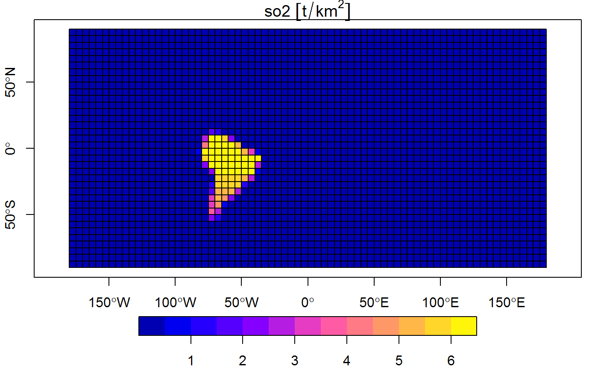

griding.Rdcalculate the inventory from a geoemiss ouput, there is 3 grid types: - global: cover all latitudes and longitudes - local: cover the latitudes and longitudes of the input data - custom: with custom limits
res argument controls the resolution of the final grid, grids whith higher resolution take more time to calculate
griding(geoemiss, variable = NA, area_unit = "km^2", res = 5, type = "global", lat = c(-90, 90), lon = c(-180, 180), tol = res * 1e-05, verbose = T, plot = F, ...)
| geoemiss | a output from geoemiss |
|---|---|
| variable | name(s) of the pollutant(s) |
| area_unit | area unit, default is "km^2" |
| res | inventory resolution in degrees |
| type | global, local or custom inventary type |
| lat | latitude for custom inventory |
| lon | lontitude for custom inventory |
| tol | param passing to dist of sf::st_buffer |
| verbose | display additional information |
| plot | true for plot separate regions and the final inventory |
| ... | additional plot parameters |
a sfc with the grid geometry and the emission by cell
inventories with multiple dates need to be combined with stacker function
so2_no_2010 <- readRDS(paste0(system.file("extdata",package="inventory"),"/so2_no.Rds")) inventory_so2_2010 <- griding(so2_no_2010[5,], variable = c("so2","NO"), plot = TRUE)#> processing South America area ...#>#>#>